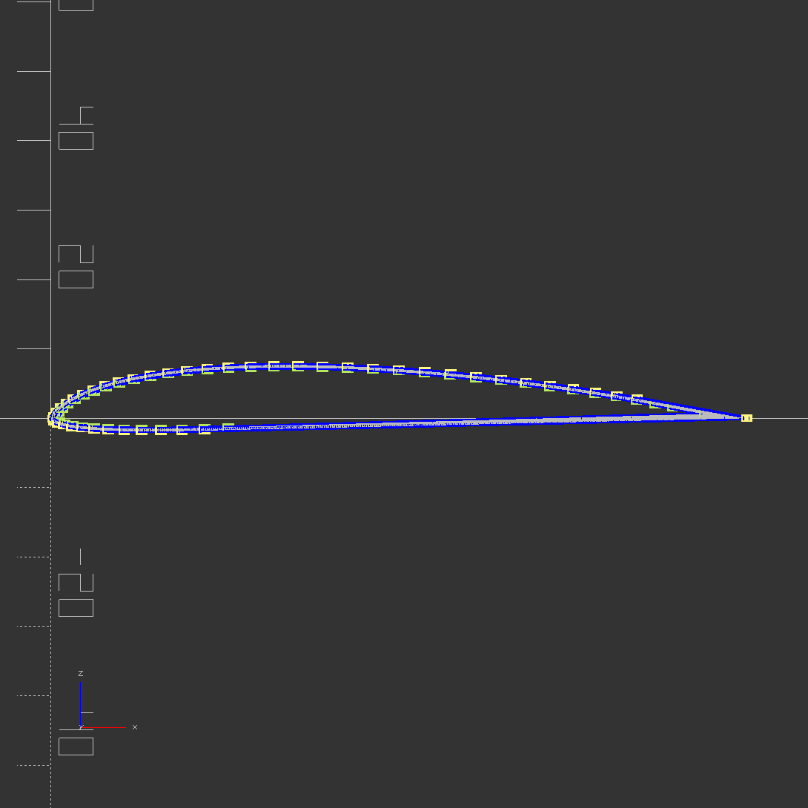
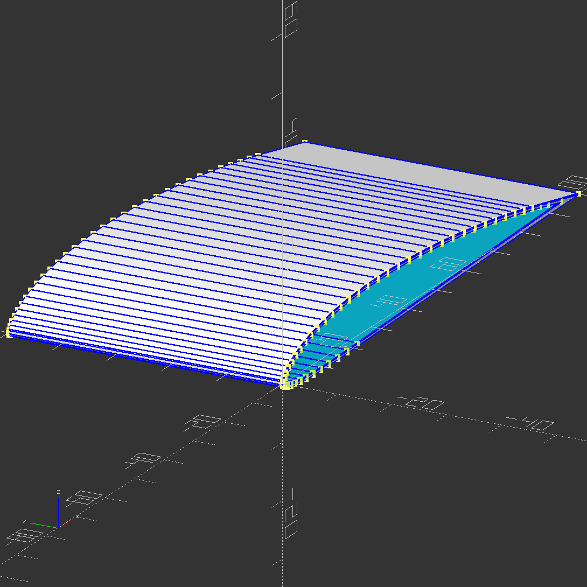
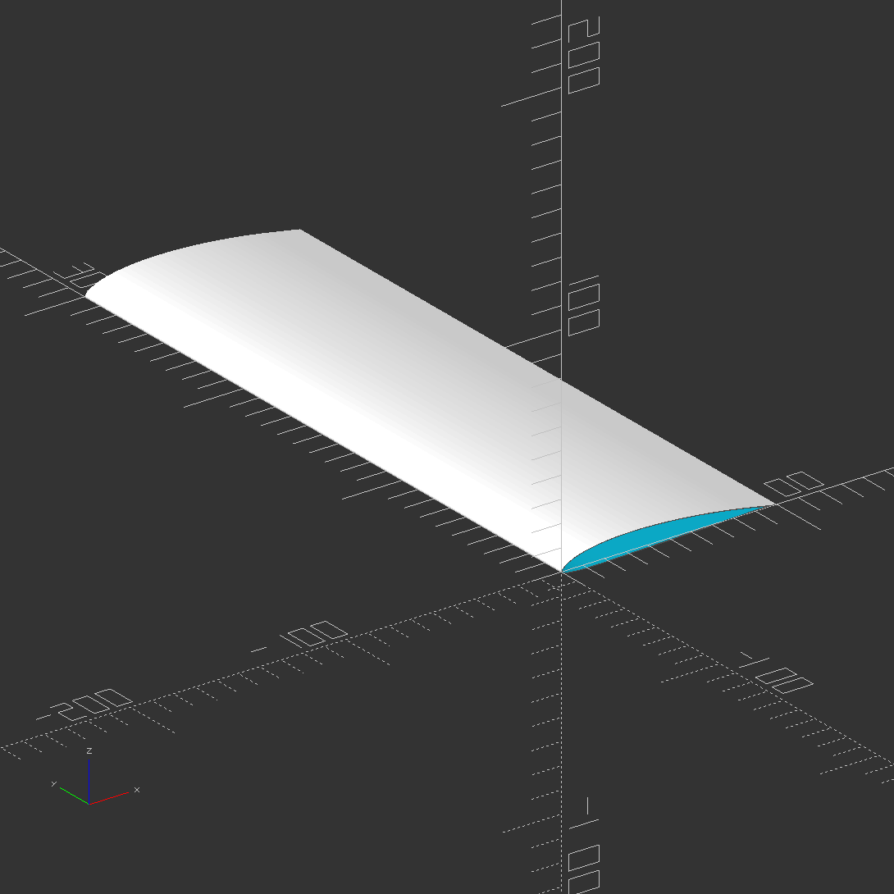
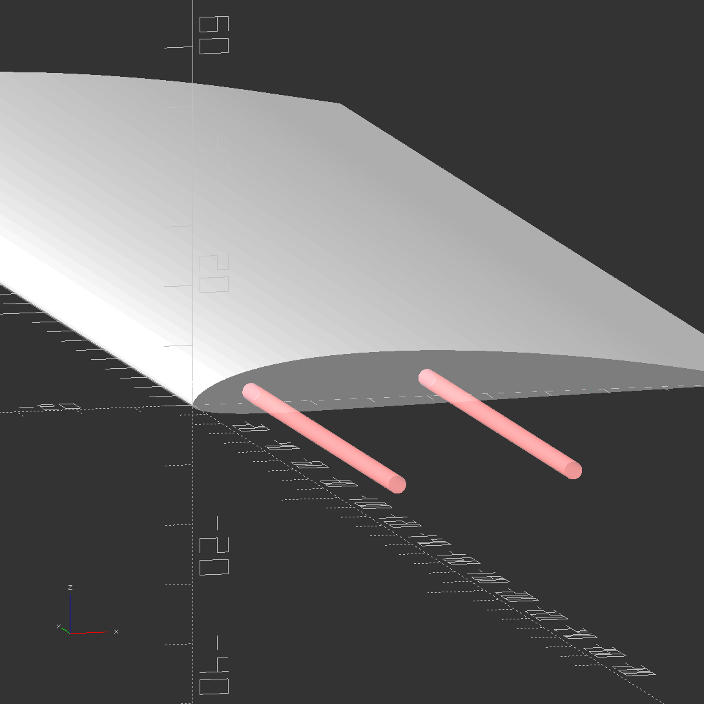
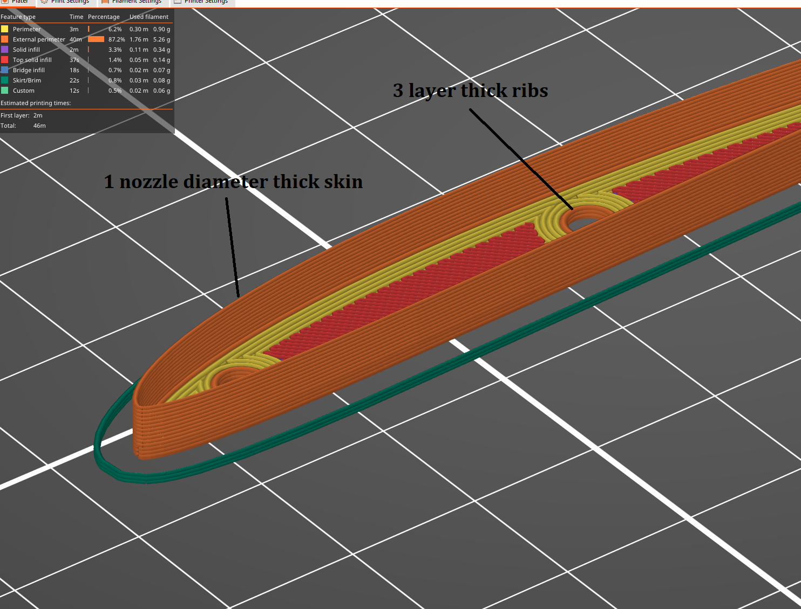
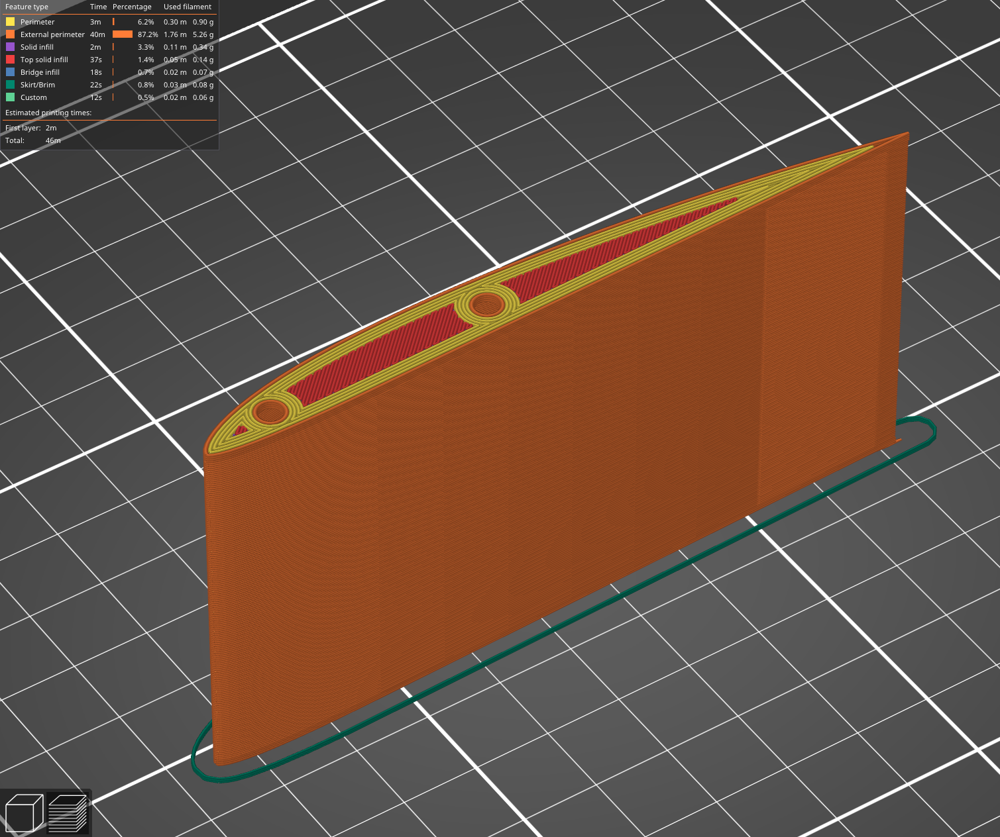
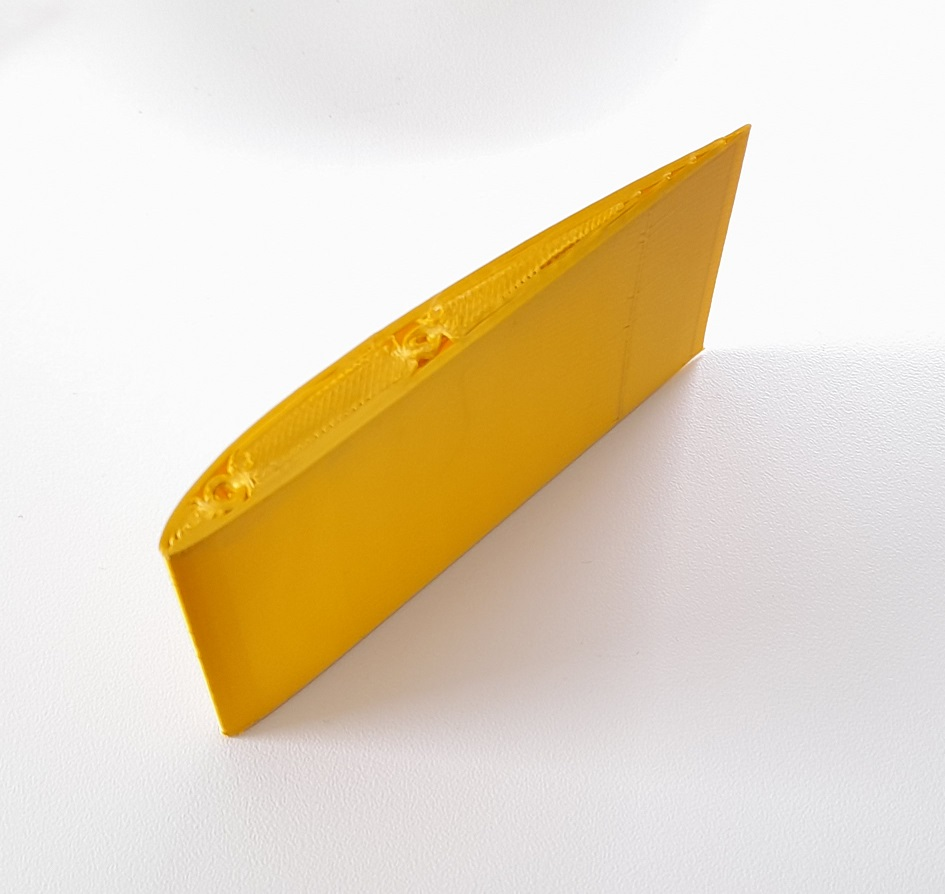

3D printing remote control airplane frames is nothing new - at the time of writing there are dozens of free designs available for download that are well tested and likely designed by someone with at least a bare minimum understanding of aerospace engineering. Luckily what I lack in aerospace knowledge I can make up with airfoil charts, parametric CAD, and brute force genetic optimization. Or at least that's the plan. I'm using the airfoil SA7038 as my starting point, because it seems to be a popular airfoil for radio controlled gliders and sail planes.

Most 3D prints aren't overly concerned with layer height or nozzle diameter precision, but designing an airfoil with a skin exactly one nozzle diameter thick requires some careful calculations. Here I have chosen to define the shape of a rib that runs along the chord of the airfoil, then by hulling two ribs a solid airfoil shape is created. This rib shape can then be offset inwards by the desired airfoil skin thickness, in this case exactly 1 nozzle diameter (0.4mm). By hulling this shrunken solid airfoil, and differencing it from the original, we are left with only the skin of an airfoil, exactly 1 nozzle diameter thick. The intention here is to print the airfoil tall-ways on the print bed.

Once the basic parametric airfoil module is established I can then modify it's airfoil shape (displayed here is: SA7038), chord length, section span length, skin thickness, rib thickness, or any other parameters by changing a single variable. The idea here is that a genetic algorithm could tune these variables against a battery of computational fluid dynamics performance tests to find an optimized set of parameters for whatever flight characteristics are desired.

Thin plastic on it's own is enough to provide a shell of an airfoil, but most larger scale gliders and sailplanes use one or more carbon fiber or fiberglass spars along the length of the airfoils to provide structural strength. I was sure to include methods for providing spar pathways with configurable tolerances to ensure the tightest fit possible. This is still more of a placeholder rib design but stands to serve as a nice demonstration of what is possible.

Opening the test airfoil in Prusa slicer shows the intended result. Printing with a 0.4mm nozzle and 0.3mm layer height.

This test airfoil is only 6.84g printed in standard PLA.

One layer of PLA is surprisingly flexible, it almost feels like taught plastic wrap. Two or three skin layers may be required, or possibly some kind of sparse internal webbing to act as reinforcement. I had hoped the bridging over the top rib would come out smoother, but it looks like I will need to add a draft angle or sweep against the ribs to print without any bridging or overhang. The slicer also wants to make an awkward wrap around pass near the trailing edge (back edge) of the airfoil which will take some more tinkering to get right.

Still a lot of exploring to do here, but with quite a bit of promise.